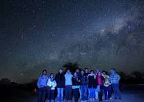
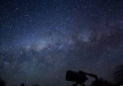

Céu do Atacama
O Deserto do Atacama, um dos lugares mais secos do planeta, proporciona noites cristalinas, ideais para observar estrelas e galáxias em detalhes.


O Deserto do Atacama, um dos lugares mais secos do planeta, proporciona noites cristalinas, ideais para observar estrelas e galáxias em detalhes.